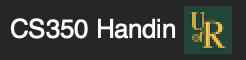
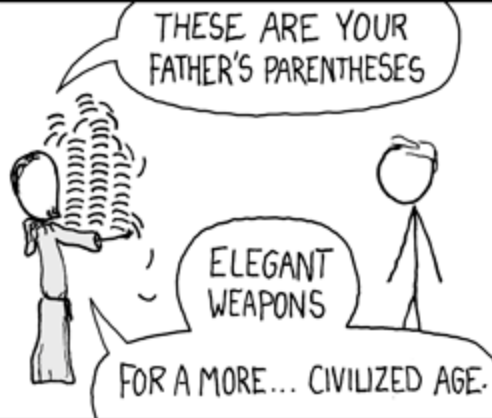

University of Regina, CS 350, Winter 2025
CS 350
1. Introduction
1.1. Course Details
- Course Objectives
To learn:
- Functional programming
- Recursion
- Immutable data
- Programming by cases
- Higher-order functions
- How to write your own programming language
- Parsing/Abstract Syntax
- Desugaring
- Evaluation
- Functional programming
- Course Notes / Textbook
- Course Notes: Functional Languages, Interpreters and Types
- Work in progress, so let me know if you discover any errors/issues
- Covers the first half of the course (Functional Programming)
- Textbook: Programming Languages: Application and Interpretation, 3rd edition, by Shriram Krishnamurthi
- aka PLAI
- Freely available online, pdf in UR Courses
- Covers the second half of the course (Implementing Programming Languages)
- We'll follow loosely
- Course Notes: Functional Languages, Interpreters and Types
- Course Communication
- Everything on URCourses
- Announcements
- Assignments and Handin
- Textbook, Slides, Videos
- Discussion Forum
- Messages to Instructor
- Do NOT ask programming/conceptual questions by email/private message
- Use the discussion forum
- If you're wondering, others are too
- EXCEPTION: when you can't ask your question without revealing your solution to the assignment
- Everything on URCourses
- Office Hours
- Location: RIC 317
- Take the elevator, go across the bridge and through the door
- Or take the stairs by the "Church Turing Thesis" wall and vending machines
- Tues at 10:00
- Thurs at 11:30
- Check pinned announcement on URCourses
- Location: RIC 317
- Grading Scheme
- 35% assignments
- 15% midterm
- In-class
- Wednesday, Feb 12
- 40% final
- 10% Participation
- Participation
- You get marks just for showing up
- Each lecture is 0.5%, to a maximum of 10%
- Each forum post is 0.5%, maximum of 5%
- e.g. You need to attend half the lectures for full marks
- Assignment 0 is 1% (counts as 2 lectures)
- Assignment 0
- Due Monday, On URCourses
- Get your Dr. Racket Set up
- Download from https://download.racket-lang.org/
- Install the plt file
- Full instructions on URCourses
- Get your handin account setup
- Username and password under "Feedback" for "Login Details"
- Submit the assignment using

- Assignments 1-6
- Six bi-weekly assignments
- Due Fridays at 5pm (17:00)
- No extensions
- Lowest two grades dropped
- Last two are "optional" if you're happy with your marks
- Assignments (ctd.)
- Mostly programming
- Some conceptual questions
- Score based on running tests
- Some public (included in assignment)
- Some private (only known by me)
- Code doesn't run \(->\) no marks
- Some points for style/documentation/etc.
- Sample based marking
- Mostly programming
- Submitting Assignments via Handin
- Unlimited submissions before deadline
- After a submission, you get:
- A score
- A list of which public tests failed, along with expected results
- READ THE TEST RESULTS to know what you need to fix
- Syntax and Type Errors
- ALL CODE CONTAINING SYNTAX OR TYPE ERRORS WILL GET A GRADE OF ZERO
- The handin tool will give an error message if your file doesn't compile
- If your code has a type or syntax error, you can try submitting again
- It's better to submit code that fails some tests than to submit code with type or syntax errors
- ALL CODE CONTAINING SYNTAX OR TYPE ERRORS WILL GET A GRADE OF ZERO
- Resources for This Course
- There are few resources available for you to learn about
flit- THIS IS BY DESIGN
- You will learn to think about code
- With your brain
- Not with copy/paste or AI
flitis a small language- All the features/functions you need will be described in the course notes
- There are many languages built using Racket
- Copying code will probably get you a 0
- There are few resources available for you to learn about
- Academic Integrity
- You are to complete all assignments individually
- Some (easy) questions on assignments are individualized to you, and must be completed for your assignment to be graded.
- All of the following are considered cheating:
- Using code from a local or online AI tool
- Copying code from a website like StackOverflow
- Viewing another student's solution
- ChatGPT DOES NOT UNDERSTAND FLIT
- Getting AI code to work is harder than just doing the assignment
1.2. Course Content
- Course Objectives
Programming language genealogy and design.
Imperative, functional, and object-oriented language paradigms.
Context-free grammars and syntax trees.
Data types, control structures, exception handling, data abstraction, information hiding, and non-determinism.
Program representation, translation, and execution.
Functional programming: advantages, constructs, closures, and higher-order operations.
Parallel programming.
\phantom{First half of the class}
- Course Objectives
Programming language genealogy and design.
Imperative, functional, and object-oriented language paradigms.
Context-free grammars and syntax trees.
Data types, control structures, exception handling, data abstraction, information hiding, and non-determinism.
Program representation, translation, and execution.
Functional programming: advantages, constructs, closures, and higher-order operations.
Parallel programming.
- First half of the class: Programming in Flit
- Course Objectives
Programming language genealogy and design.
Imperative, functional, and object-oriented language paradigms.
Context-free grammars and syntax trees.
Data types, control structures, exception handling, data abstraction, information hiding, and non-determinism.
Program representation, translation, and execution.
Functional programming: advantages, constructs, closures, and higher-order operations.
Parallel programming.
- Second half of class: implementing interpreters
- Common Questions
- Am I going to use Racket in Industry?
- No
- Am I going to use Racket in Industry?
- Common Questions
- Then why are we learning it
- Don't know what you'll be using in industry
- Learn a small language that shows core concept
- Learn the pieces that languages are made of
- How to see past syntax
- Understand what programs mean
- Then you'll be able to learn whatever language you need in industry
- Then why are we learning it
- Common Questions
- Do you really expect me to learn a new language in just one term?
- Yes. This is a programming languages class.
- The language we're learning is small (really just functions and pattern matching)
- Do you really expect me to learn a new language in just one term?
- When might this course be useful?
You might get hired to
- Write a JavaScript Node server using callbacks to handle requests
- Maintain a python library full of lambdas and list comprehension
- Add to Discord's chat system built in Elixr
- Write an Android GUI using Kotlin, Jetpack Compose and function composition
- Write Rust at Amazon, or write an iPhone app in Swift, and need to use
Optioninstead of null pointers
- I can't teach you all of Kotlin, JavaScript, Elixr, Rust, Swift, Clojure, Scala, etc. in one term
- But I can teach you what they're made of
- The Science of Computer Science
- How to think about programs in a rigorous way
- Programs as mathematical objects
- Equations with programs
- Problem solving with types
- How to make sure you handle all the cases
- Making invalid states unrepresentable
- How the shape of a problem can guide to its solution
- Using types to communicate properties of code
- How to make sure you handle all the cases
- This is radically different from the kind of coding you have done so far
- How to think about programs in a rigorous way
2. Recursion and Immutable Data

2.2. Programming in CS 350
2.3. Racket
- What is Racket?
- Lisp-style language
((((((((Parentheses))))))))
- Language for making languages
- You will find documentation for many of these languages online
- They are different from what we are doing. Beware!
- Lisp-style language
- What is Dr. Racket?
- IDE for Racket
- Syntax highlighting
- Parentheses matching
- Other useful features
- Some I've developed custom for this class
- Read-Eval-Print-Loop (REPL)
- Feedback when writing code
- Can evaluate expressions while you're writing your code
- IDE for Racket
2.4. Flit
- What is Flit?
- "Functional Languages, Interpreters and Types"
- Language defined in Racket
- Functions you can call
- Adds syntax to Racket
- Declaring and pattern matching on data types
- Type annotations for functions
- Minimal
- Has what you need to write programming languages
- Not much else
- You can do a lot with very little
- Flit features:
- Purely functional
- Variables never change values
- Can't do
int x = 3; x = 4;
- Strongly typed
- Every expression has a type
- No implicit coercion between types
- Type inference
- Don't have to write down the types
- Writing types down is still a good idea
- Compiler checks if the actual type matches what you wrote
- Serves as documentation
- Data Types with Variants
- Purely functional
- Syntax in Flit
- Expression: something that we run to compute a value
- Every flit expression is either:
- A literal (e.g.
3, "hello", #t, #f) - An identifier (variable/function name), e.g.
x, y, +, and, or - Parentheses containing some expression
(a b c d ...)
- A literal (e.g.
- Parentheses mark the start and end of complex expressions
- If the first thing in the parentheses is a keyword, then that keyword determines
the meaning of the expression
- e.g.
if, lambda, type-case
- e.g.
- Otherwise, interpreted as a function call
- First thing in the parentheses is the function to be called
- NOT always a named function!
- First thing in the parentheses is the function to be called
- Infix vs. Prefix
- All operations in Flit are written using "prefix notation"
- Operation, then arguments
(+ 2 3), not(2 + 3)
- Languages like C++ and Python use "infix notation" for math
- All operations in Flit are written using "prefix notation"
- Function calls
- In C++ you write
f(x,y,z) - In Flit, you write
(f x y z) - 99% of what you do in Flit is calling functions
- In C++ you write
- Why Parentheses?
- They're different from what you're used to
- I want to to learn to see past syntax
- You can tell exactly where an expression starts and ends
- You can tell exactly the order of operations
- No need for BEDMAS/PEMDAS or precedence rules
- Most importantly: Programs are Trees
- Hierarchical structure: expressions contain expressions contain expressions…
- Parentheses make this very explicit
- They're different from what you're used to
- Parentheses in the real world
- e.g. Clojure, uses parentheses
- WebAssembly has an S-Expression based syntax for programmers
- JSON is basically just funny-looking parentheses
- Numbers
- Booleans
- Imperative Languages
- C, C++, and Python are imperative languages
- Each statement tells what to do
- Mutable state and side-effects
- Program state: current variable values
- Statements can change the state
- Mutate value of variable
- C, C++, and Python are imperative languages
- Functional Language
- Flit is purely functional
- Program is made up of expressions
- These evaluate to a value
- Variables are immutable
- Like variables in math
- Can make new ones, but value never changes
- Use functions and recursion to do all computation
- Example: Imperative Conditionals
- Conditionals in C++/Python tell what to do
if (someCondition) doThis else doThat
- The if-statement doesn't have a value, but it can mutate (change) the state
- Conditional Expressions
(if (< 2 3) "hello" "goodbye") (+ 3 (if (= 2 (+ 1 1)) 3 40))"hello" 6
- Conditionals in Flit are expressions, not statements
- Value is either the "then" branch or the "else" branch
- Always have 2 branches
- Boolean changes what the expression is, not what it does
- e.g. Above, the 2nd
ifevaluates to3because the condition evaluates to true
- e.g. Above, the 2nd
- Equational Reasoning
- When all variables are immutable, we can treat programs as mathematical objects
- Write equations about programs as if they were numbers/booleans/etc.
- Referential transparency
- If you give a functional program the same inputs, you will always get the same outputs
- Example:
For any number literals
mandn, the expression(+ m n)is equal to the sum ofmandn. The other arithmetic operations have similar rules. - Imperative Breaks Equational Reasoning
In C++, the equals sign is a LIE
int x; x = 3; x = 4;
- Have
x = 3andx = 4, so surely3 = 4, right?
- Have
- Equations for IF
We can describe the behaviour of if-expressions with the following two equations:
For any expressions
EXPR1andEXPR2(if #t EXPR1 EXPR2) = EXPR1(if #f EXPR1 EXPR2) = EXPR2
- Functions
- Calling a function replaces variable with concrete argument
(define (addOne [x : Number]) : Number (+ x 1)) (addOne 10)
- Functions
(define (isRemainder [x : Number] [y : Number] [remainder : Number]) : Boolean (= remainder (modulo x y))) (isRemainder 10 3 1) (isRemainder 10 4 1) - Functions (ctd.)
- General form:
(define (functionName [argName : argType] ... [argNameN : argTypeN]) : returnType functionBody)- Later in the course we'll see another way of defining functions
- Symbols
- Special type in Racket
- Written with single quote
'a,'hello,'foo - Like strings, but you don't ever traverse/concatenate/look inside
- Only relevant operation is comparison
(symbol=? 'a 'b)- Compares pointers, so very fast
- Intermediate definitions
- Can still define variables
- Once they're given a value, never changes
- Allows re-use
- Only evaluated once, can use multiple times
(define (squaredSum [x : Number] [y : Number]) : Number (let ([xy (+ x y)]) (* xy xy))) (squaredSum 1 2)8 300000
- Can still define variables
- Intermediate Definitions
In C++, you might write
while (someCond){ int x = f(3); doSomethingWith(x); doSomethingElseWith(x); }letis like this- Scope is clear from the brackets
- Functional, so the
doSomethingnever changes the value ofx - Could have just written
f(3) instead ofxin both places- Same, as long as there's no side effects
- Alternate Versions of Let
let*: multiple definitions, later ones can refer to earlier ones99% of the time this is what you want to use
(let* ([x (+ 2 3)] [y (* x x)]) (* y y))
letrec: multiple definitions that can all refer to each other- We'll see this later when we learn about lambdas
2.5. Functional Thinking and Recursion
- What Is Functional Programming?
- Functions in our program correspond to functions in math
- Mapping from inputs to outputs
- Same inputs always produce the same outputs
- Talk about what programs are, not what programs do
- Instead of changing variable values
- We call functions with different arguments
- Instead of changing data structures
- We decompose them, copy the parts, and reassemble them in new ways
- Copying is implemented with pointers
- Fast, memory efficient
- Functions in our program correspond to functions in math
- Advantages of Functional Programming
- All program state is explicit
- Easy to tell exactly what a function can change
- No shared state between components
- Other function can't change value without realizing
- No data races for threading
- Programming is declarative
- Structure of the problem guides structure of the solution
- Equational reasoning
- In imperative languages, equals sign
=is a LIE- Can write
x = 3; x = 4;, but3 != 4
- Can write
- If have
(define (f x) body), then for ally,(f y)andbodyare interchangable- after replace
xwithyinbody - Easier to tell if your program is correct
- Some optimizations easier
- after replace
- In imperative languages, equals sign
- All program state is explicit
- Disadvantages of Functional Programming
- None?
- Sometimes slower
- Very hard to do without Garbage Collection
- e.g. see Closures in Rust
- Sometimes faster because you need fewer safety checks in your code
- Very hard to do without Garbage Collection
- Farther from what the CPU is actually doing
- Some algorithms are more concise with mutation
- But lots aren't
- How to design functional programs
- 5 Step method:
- Determine the representation of inputs and outputs
- Write examples and tests
- Create a template of the function
- Depends on input/output types
- Covers all cases
- Possibly extracts fields, recursive calls, etc.
- Fill in the holes in the template
- Run tests
- Further reference:
http://htdp.org, Matthew Flatt's Notes (URCourses)
- 5 Step method:
- Factorial - Representation
- \(n! = 1 \times 2 \times \ldots n\)
Takes in a (natural) number, outputs a number
(define (factorial [n : Number]) : Number (error 'factorial "TODO"))
- Factorial - Examples
(test (factorial 0) 1 ) (test (factorial 1) 1 ) (test (factorial 2) 2 ) (test (factorial 3) 6 ) (test (factorial 4) 24 ) (test (factorial 5) 120 )
- Notice the pattern?
- Factorial - Template
- A natural number is either
- Zero
- One more than some other number
- We call this the "successor", written "S" or "suc"
- Probably want to use this in the solution
(define (factorial [n : Number]) : Number (if (zero? n) (error 'zero "TODO") (let ([n-1 (- n 1)]) (error 'suc "TODO")) )) - A natural number is either
- Factorial - Recursion
- Divide problem into base case and recursive cases
- Can use recursive calls to smaller arguments
- Build up solution in terms of solutions to smaller problems
(define (factorial [n : Number]) : Number (if (zero? n) (error 'zero "TODO") (let* ([n-1 (- n 1)] [fn-1 (factorial n-1)]) (error 'suc "TODO")) )) - Factorial - Filling holes
- Example gives the base case for 0
- Notice the pattern
- Multiplying the first n numbers is the same as n times the first n-1 numbers
- We get that from our recursive call
(define (factorial [n : Number]) : Number (if (zero? n) 1 (let* ([n-1 (- n 1)] [fn-1 (factorial n-1)]) (* n fn-1)) )) - Run Tests
(test (factorial 0) 1 ) (test (factorial 5) 120 )
- Trust the Natural Recursion
- The magic key:
- Assume you have a solution already, but only for smaller arguments
- Express solution for larger ones in terms of smaller ones
- Like induction in math
- The shape of the data guided the shape of the solution
- Zero had no sub-data, so there were no recursive calls
- \(suc\ n\) has one sub-value, namely \(n\)
- One recursive call
- The magic key:
- Preconditions
- Note: types not quite precise enough
- e.g.
(factorial -1)or(factorial 1/2)loop forever
- e.g.
- Precondition: argument is a non-negative whole number
- Can't express this in the code, so write in the comments
- Aside: I research languages where you can express this with types
- Note: types not quite precise enough
- Another Example: Exponentiation
- Live coding in Dr. Racket
2.6. Unbounded Data: Lists
- Functional Linked Lists
- Every linked list is one of:
- Empty (sometimes called
nilornull) - An element appended to the beginning of another list
- Empty (sometimes called
- We call the operation of appending an element to a list
cons- Historical name, goes back to LISP days
- Cons does not change its input
- Creates a new list whose tail is the old list
- Every linked list is one of:
- Lists in Racket
- Multiple ways to write lists
'()is the empty list, can also writeempty- Extending lists:
(cons h t)creates list with elementhappended to listthandtforheadandtail
- List literals, can write
(list 1 2 3 4)or'(1 2 3 4)- Shorthand for:
(cons 1 (cons 2 (cons 3 (cons 4 '()))))
- Lots more helper functions, see the documentation
- Template for Lists
- Two cases: list is empty or cons
Make a recursive call on tail of cons case
(define (list-template [xs : (Listof Number)]) (if (empty? xs) (error 'nil "TODO") (let ([h (first xs)] [t (rest xs)] [tRet (list-template t)]) (error 'cons "TODO")) ))
- Example: Sum
(define (sum [xs : (Listof Number)]) : Number (if (empty? xs) 0 (let* ([h (first xs)] [t (rest xs)] [tRet (sum t)]) (+ h tRet)))) (sum '()) (sum '(1 2 3)) (sum '(100 2 3))0 6
- Pattern Matching: Motivation
- Recursive case: used "getter" function to get the sub-data in the recursive case
(- x 1)for numbersfirstandrestfor lists
- Always want to have the sub-parts available
- Don't want to apply getters on the wrong data
- e.g.
first '()will raise an error
- e.g.
- Recursive case: used "getter" function to get the sub-data in the recursive case
- Pattern Matching:
- Example: Generating a Modified List
e.g. Increment each number in a list
- Uses pattern matching
- Shows how to create lists recursively
(define (increment [xs : (Listof Number)]) : (Listof Number) (type-case (Listof Number) xs [empty empty] [(cons h t) (cons (+ h 1) (increment t))])) (increment '(2 3 4))
- Parametric Polymorphism
- Lists are a parameterized type
- Only need to define once for the different element types
- Many list functions are polymorphic
- Work regardless of what type of elements there are
- Types contain type variables, denoted with single quote
'x- Like symbols
- Plait type inference figures out solutions for type variables when you call a function
- E.g.
first : ((Listof 'a) -> 'a)- Input is list whose elements are some type
'a - Output has type
'a - e.g.
first '(1 2 3)is aNumber, butfirst '(#t #f #t)is a Boolean
- Input is list whose elements are some type
- Later, this will be very useful for writing generic list operations
- Lists are a parameterized type
- Example: List Concatenation
- We can combine two lists into a single list
- Polymorphic type
- Works for list with any contents
- We never do anything with the contents other than copy
This function is built into Plait as
append(define (concat [xs : (Listof 'elem)] [ys : (Listof 'elem)]) : (Listof 'elem) (type-case (Listof 'elem) xs [empty ys] [(cons h t) (cons h (concat t ys))]))
- Example: List Concatenation (ctd.)
- More Examples
- Demo: Dr. Racket (as time permits)
- Duplicating each element of a list
- "zipping" two lists together
- Filtering out odd elements of a list
- Demo: Dr. Racket (as time permits)
3. Defining Data Types
3.1. Warmup: Pairs
- Pairs: "AND" for types
(Number * Boolean)- Cartesian product
- "AND" for types
- A value of this type contains a
NumberANDa Boolean - Why is it infix? Who knows
- Maybe to help distinguish it from multiplication
- Cartesian product
- Projections
- Get the data from the pairs
(define myPair : (Number * Boolean) (pair 2 #t)) (fst myPair) ;;Number (snd myPair) ;;Boolean
2 #t
- Pairs in General
- For any types
'aand'bthere is a type('a * 'b) - Build with
pair : ('a 'b -> ('a * 'b))- Takes one argument of each type, produces the pair
- Projections
fst : (('a * 'b) -> 'a)snd : (('a * 'b) -> 'b)
- For any types
3.2. Algebraic Data Types
- "OR" for types
- Pairs gave us "AND"
- What does "OR" look like for types?
(OR Number Boolean)should be the type of values that are either a number or a boolean- Want a tag so we can check which one it is
- Called a "constructor"
- not the same as Java/OOP constructor
- Saw some examples like this already
- A number is zero OR one plus another number
- A list is empty OR an element cons-ed to another list
- Racket lets us define our own types mixing AND and OR
- First example
(define-type Shape (Rectangle [length : Number] [width : Number]) (Circle [radius : Number])) (define tv (Rectangle 16 9)) (define loonie (Circle 1))Shapeis a datatype- It has two constructors,
RectangleandCircle- i.e. a Shape is a circle or a rectangle
Rectanglehas two fields with type Number,lengthandwidthCirclehas one field with type Number
- Creating values of a datatype
(define-type Shape (Rectangle [length : Number] [width : Number]) (Circle [radius : Number])) (define tv (Rectangle 16 9)) (define loonie (Circle 1))- We construct a Shape by calling a constructor
- Doesn't do anything except package the data together
- A Shape either has two numbers OR one number
- Depending on the tag
- We construct a Shape by calling a constructor
- Auto-generated Functions
(Rectangle? tv) (Circle? tv) (Rectangle-length tv) ;; (test/exn (Circle-radius tv) "") ;;raises an error, no such field present
- Pattern matching
- Don't want to accidentally get a field that doesn't exist
- Almost always want to use the fields in the solution
- Solution: pattern-matching
(define (area [shp : Shape]) : Number (type-case Shape shp [(Rectangle l w) (* l w)] [(Circle r) (* 3.14 (* r r))]) ) (area tv) (area loonie)144 3.14
- Total Matching
- Missing a case in pattern matching is a syntax error
- Lets us know we are safe
- Can add an else clause to handle multiple cases
- See Racket window
- E.g. Representing Failure
- In plait standard library
(define-type (Optionof 'a) (none) (some [v : 'a]))
- Pattern matching guarantees no null pointer errors
- We'll see a more detailed example
- Most Generic Form
(define-type (Either 'a 'b) (Left [inLeft : 'a]) (Right [inRight : 'b]) )
- You can define all (non-recursive) datatypes with this and pairs
- e.g. Shape is
(Either (Number * Number) Number)
3.3. Recursive Data
- Self-reference in types
- The real power of datatypes is the ability to have fields of the type being defined
- This allows us to define trees
- of arbitrary depth
- Data can be traversed using recursion
- Example: Lists as a dataype
(define-type NumList (Nil) (Cons [head : Number] [tail : NumList]))
- Note: this is not quite how lists are defined in Racket/plait
- But they could be!
- Recursive fields in datatype \(\to\) recursive calls in template
(define (sum [xs : NumList]) (type-case NumList xs [(Nil) 0] [(Cons h t) (let ([sumRest (sum t)]) (+ h (sum t))) ])) (sum (Cons 100 (Cons 20 (Cons 3 (Nil))))) - Note: this is not quite how lists are defined in Racket/plait
- Example: Filesystem
- Model of a file system
- Not how is implemented on disk
(define-type Filesystem (File [name : String] [data : Number]) (Folder [name : String] [contents : (Listof Filesystem)])) - Model of a file system
- Linear Search using Recursion
- Find the first matching file
(define (search [target : String] [fs : Filesystem]) : (Optionof Number) (type-case Filesystem fs [(File name data) (if (string=? name target) (some data) (none))] [(Folder _ contents) (searchList target contents)])) - Helper Function: Searching the list
- We have mutually recursive types
Filesystemcontains(Listof Filesystem)(Listof Filesystem)containsFilesystem
- So we use mutually-recursive functions
(define (searchList [target : String] [files : (Listof Filesystem)]) : (Optionof Number) (type-case (Listof Filesystem) files [empty (none)] [(cons h t) (let ([result (search target h)]) (if (none? result) (searchList target t) result)) ])) - We have mutually recursive types
- Testing the search
(define InnerSolarSystem (Folder "Sun" (list (File "Mercury" 1) (File "Venus" 2) (Folder "EarthSystem" (list (File "Earth" 3) (File "Moon" 3.5))) (Folder "MarsSystem" (list (File "Mars" 4) (File "Phobos" 4.3) (File "Diemos" 4.6)))))) (search "Moon" InnerSolarSystem) (search "Jupiter" InnerSolarSystem)(some 3.5) (none)
4. First-Class Functions
4.1. Higher Order Functions
- Functions on Functions
- Functions let us be abstract over the data they work on
- But why can't we be abstract over what they do to that data?
- We can!
- A higher order function is a function that takes functions as an argument, or returns functions as a value.
- Examples:
- Callbacks
- Give a GUI element the function to run when clicked
- Threads
- Give the function for each thread to compute
- Callbacks
- Function types
- Type
(T1 T2 ... Tn -> S)- The type of functions that:
- take \(n\) arguments
- each with type \(T_i\) respectively
- produces a result of type \(S\)
- The type of functions that:
- Functions can be defined, where their arguments are function types!
- Type
- First Class Functions
- We say a language has first class functions if functions are treated like any
other expression/value in a language
- We can construct them at any point, not just at the top level
- We can give them as arguments to functions
- We can return them as results of functions
- We say a language has first class functions if functions are treated like any
other expression/value in a language
- Example: Repeatedly apply a function
(define (applyNTimes [f : (Number -> Number)] [x : Number] [nTimes : Number]) : Number (if (<= nTimes 0) x (applyNTimes f (f x) (- nTimes 1))))- Takes 3 arguments
- A function from Number to Number
- A number
- A number
- Returns a number
- In the body:
- Calls the parameter
fas a function onx
- Calls the parameter
- Takes 3 arguments
- ctd
(define (timesTen x) (* 10 x)) (applyNTimes add1 3 5) (applyNTimes timesTen 3 5)
- Takes whatever function we pass in, applies it to 3, 5 times
(f (f (f (f (f 3)))))
- Takes whatever function we pass in, applies it to 3, 5 times
- Example: apply an operation to each number in a list
(define (mapNum [f : (Number -> Number)] [xs : (Listof Number)]) : (Listof Number) (type-case (Listof Number) xs [empty empty] [(cons x rest) (cons (f x) (mapNum f rest))]))- Takes a function from Numbers to Numbers, and a list of numbers
- Applies
fto each element of the list- Apply
fto everything in the empty list- Produces empty list
- Apply
fto each in(cons x rest)- Apply
ftox, recursively applyfto everything inrest - Combine the results with
cons
- Apply
- Apply
- ctd
(define (timesTen x) (* 10 x)) (mapNum add1 '(1 2 3 4)) (mapNum timesTen '(1 2 3 4))
- Creating Anonymous Functions
- So far, have only given functions that we defined with
defineas arguments to other functions - What if we want to make a small little function that we use only once?
- What if we want to make a function dynamically?
- So far, have only given functions that we defined with
- Lambda
(lambda (x) body)
- Creates a function with argument
xthat returnsbody xmay occur in body- Is an expression, not a declaration
- Can occur anywhere else
- Creates a function with argument
- Lambda variations
;; Type annotation (lambda ([x : Number]) : Number (+ x 1)) ;; Multiple arguments (lambda (x y) (+ x (+ x y))) ;;Multiple type annotations (lambda ([x : Number] [y : Number]) (+ x (+ x y))) ;; Unicode Greek lambda ;; In Dr. Racket: either cmd-\ or ctrl-\ depending on os (λ (x) (+ x x))
- Example
(define (timesTen x) (* 10 x)) (mapNum timesTen '(1 2 3 4)) (mapNum (lambda (x) (* x 10)) '(1 2 3 4))
- Define as sugar
(define (f x) body)- Same as
(define f (lambda (x) body)) - Defining functions is syntactic sugar for lambda in Plait
- Lambda in a context
- Don't have to use lambda at the top level
- Can refer to other variables in the body of the lambda
(define (addNToEach [numToAdd : Number] [xs : (Listof Number)]) : (Listof Number) (mapNum (lambda(x) (+ x numToAdd)) xs)) (addNToEach 3 '(1 2 3 4))'(4 5 6 7)
- The lambda captures the variable
numToAdd - Dynamically creates the function that adds its argument to whatever
numToAddis
- Functions as return values
- We can also make functions that produce other functions as a result
- Just use
lambdain the body of the function
- Just use
(define (makeAdderWith n) : (Number -> Number) (lambda (x) (+ n x))) (makeAdderWith 3) (mapNum (makeAdderWith 3))
- We can also make functions that produce other functions as a result
- Combinators
- Functions that take and return functions
- Can "lift" operations to whole functions
- Create a new function by specifying how it should behave on each input
- Lambda lets us refer to this variable
(define (+fun [f : (Number -> Number)] [g : (Number -> Number)]) : (Number -> Number) (lambda (x) (+ (f x) (g x)))) ;; e.g. Make the function that computes - Example: Beyond Numbers
(define (liftOption [f : (Number -> Number)]) : ((Optionof Number) -> (Optionof Number)) (lambda ([optionN : (Optionof Number)]) (type-case (Optionof Number) optionN [(none) (none)] [(some x) (some (f x))] ))) (define optionPlusOne (liftOption add1)) (optionPlusOne (some 3)) (optionPlusOne (none))(some 4) (none)
5. Polymorphic Higher-Order Functions
5.1. Highly Generic Programming
- Polymorphic Functions
- Higher-order functions are even more powerful when combined with type variables
- Allows us to say "This works on any type, as long as that type supports this kind of operation"
- Express ideas like "do this to every element in a list"
- Example: Sorting
(define (sortNumbers [xs : (Listof Number)]) : (Listof Number) ....) ;; These implementations are probably doing 99% the same thing ;; except they're using different comparison operators (define (sortById [xs : (Listof (Number * String))]) : (Listof (Number * String)) ....) ;; What we really want is this: (define (sortBy [xs : (Listof 'a)] [compare : ('a 'a -> Boolean)]) : (Listof 'a) ....)- Sort function that works on any type
'a- So long as we have a comparison function
comparethat can find if one'avalue is <= another
- So long as we have a comparison function
- Sort function that works on any type
- Map
- One of the most essential functions on list
- For each element in the list, apply this function to each element
- Returns the resulting list, original list is unchanged
- If your function takes in type
'aand produces type'b, thenmapcan turn a(Listof 'a)into(Listof 'b)
(define (map [f : ('a -> 'b)] [xs : (Listof 'a)]) : (Listof 'b) (type-case (Listof 'a) xs [empty empty] [(cons x rest) (cons (f x) (map f rest))])) - Examples
(map (lambda (x) (* x 1001)) '(1 2 3 4)) (map not '(#t #f #f #t)) (map some '("Hello" "Goodbye"))'(1001 2002 3003 4004) '(#f #t #t #f) (list (some "Hello") (some "Goodbye"))
- Map does recursion so you don't have to
- Lots of times, we were writing code that looked exactly the same
- Higher-order functions and polymorphism let you turn those patterns into an actual function
- Filter
- Another common function on lists
- Takes a predicate for some type:
- Look at two values and return either true or false
- Defines a property on that type
- Returns a new list containing only the elements satisfying the predicate
(define (filter [p : ('a -> Boolean)] [xs : (Listof 'a)]) : (Listof 'a) (type-case (Listof 'a) xs [empty empty] [(cons x rest) ;; Check if the first element satisfies p ;; If it does, include it in the results, ;; otherwise omit (if (p x) (cons x (filter p rest)) (filter p rest))])) - Filter examples
(filter (lambda (x) (zero? (modulo x 2))) '(1 2 3 4 5 6)) (filter some? (list (none) (some "Hello") (none) (some "Goodbye") (none) (none) (some "Cheers") (none))) (filter (lambda (x) (> x 1000000)) (list 1 2 3 4 (* 100000 100000)) ) (filter (lambda (x) #f) '(1 2 3 4)) - Using Filter: The Functional Quicksort
(define (sortBy [compare : ('a 'a -> Boolean)] [xs : (Listof 'a)]) : (Listof 'a) (type-case (Listof 'a) xs [empty empty] [(cons first rest) (let* ([smallers (filter (lambda (x) (compare x first)) rest)] [biggers (filter (lambda (x) (not (compare x first))) rest)]) (append (sortBy compare smallers) (cons first (sortBy compare biggers))))])) - How Quicksort works
- An empty list is already sorted
- If a list has at least one element, we can partition that list into everything smaller than that element, and greater than that element
- We recursively sort those lists
- This gives us 3 lists:
- A sorted list of things smaller than (or equal to) the head
- The head
- A sorted list of things greater than (or equal to) the head
- If we append these together in that order, the result will still be sorted
- And contains everything from the original list
- Quicksort Examples
(sortBy <= '(5 4 1 5 3 9 7)) (sortBy (lambda (x y) (<= (fst x) (fst y))) (list (pair 5 "a") (pair 4 "b") (pair 1 "c") (pair 9 "d"))) (sortBy (lambda (s1 s2) (<= (string-length s1) (string-length s2))) (list "goodbye" "hey" "hello" "a" "arithmetic" ))'(1 3 4 5 5 7 9) (list (values 1 "c") (values 4 "b") (values 5 "a") (values 9 "d")) '("a" "hey" "hello" "goodbye" "arithmetic") - Polymorphic Combinators
- Combinators that are polymorphic are highly general
- Ways to build new functions out of old functions
- Often used to build up arguments to map or filter
- Combinators that are polymorphic are highly general
- Function Composition
- For any two functions, we can chain them together
- If their types agree
;; Written that way to match the symbol in math (define (o [g : ('b -> 'c)] [f : ('a -> 'b)]) : ('a -> 'c) (lambda (x) (g (f x)))) ;; (g (f x)) = ((o g f) x) for all x ;; Arguments in that order so that this equation looks nice - For any two functions, we can chain them together
- Example
(map (o (lambda (x) (* x 10)) add1) '(1 2 3 4)) (filter (o not empty?) (list '() '(1 2) '(3 2 1) '() '(1)))'(20 30 40 50) '((1 2) (3 2 1) (1))
- See type example on the board
- Partial Application
For functions that take multiple arguments, we can get a new function by providing only one argument
(define (curry [f : ('a 'b -> 'c)] [x : 'a]) : ('b -> 'c) (lambda (y) (f x y)))Can reverse order of arguments
(define (flip [f : ('a 'b -> 'c)]) : ('b 'a -> 'c) (lambda (bVal aVal) (f aVal bVal)))
- Example
;; Gets (modulo x 2) for each x in the list (map (curry (flip modulo) 2) '(1 2 3 4 5 6 7 8))'(1 0 1 0 1 0 1 0)
- Point Free Programming
- When you build functions using combinators instead of lambda, it's called point free programming
- Building programs becomes kind of like putting Lego together
- Generally, don't want to always use point-free programming
- Sometimes the lambda is just clearer
- But can be easier to read in many cases
6. Generative Recursion and Tail Recursion
6.1. Broad Goals
6.2. Generative Recursion
- The Problem
- Some problems don't obviously map to the style of recursion we've seen so far
- Or do, but not efficiently
- Especially problems that are about incrementally updating a value
- No good way to talk about "the result so far"
e.g. What's the recursive version of:
int x = startVal; for (int i = 0; i < n; i++) { x = f(x); }
- Some problems don't obviously map to the style of recursion we've seen so far
- Example: Reversing a List The Naive Way
(define (reverse [xs : (Listof 'a)]) : (Listof 'a) (type-case (Listof 'a) xs [empty empty] [(cons h t) (append (reverse t) (list h))])) (reverse '(1 2 3)) (reverse '("hello" "goodbye"))'(3 2 1) '("goodbye" "hello")- Reversing the empty list produces the empty list
- Reversing a list with one element means
- Reversing the tail of the list
- Putting the first element at the end of the new list
- \(\mathcal{O}(n^2)\): Each
appendhas to walk through the whole list
- Reverse: What we want (conceptually)
- Start with an empty list
- Pop an element off the first list, then add it to our result list so far
- When reach the end, have a reversed list
- An efficient reverse
(define (reverseHelper [xs : (Listof 'a)] [listSoFar : (Listof 'a)]) : (Listof 'a) (type-case (Listof 'a) xs [empty listSoFar] [(cons h t) (reverseHelper t (cons h listSoFar))])) (define (reverse xs) (reverseHelper xs '()))- Helper function
- Base case: finished, produce the list we've built so far
- Recursive case: keep building, but on the tail of the list
- Call with head appended to
listSoFar
- Call with head appended to
- Main function calls the helper with the start value
- Empty list
'()
- Empty list
- Helper function
- General Template
- To write
f : (Ty1 Ty2 ... TyN -> ReturnTy)
- Write a helper function with one extra argument
- Extra argument called the accumulator
- Often named
accum
- Often named
- Has same type as return type
fHelper : (Ty1 Ty2 ... TyN ReturnTy -> ReturnTy)
- Extra argument called the accumulator
- Helper function is recursive
- Base case: return the accumulator
- Recursive case: call the helper recursively on the sub-value
- Compute an updated value for the result so far
- Pass it as the accumulator for the recursive call
- Last step:
fcalls helper with initial accumulator value
- Write a helper function with one extra argument
- To write
- The Call Stack
- In Racket (or any language), when we make a function call, we need to know what to do with the result
- In C/C++: where to execute after return is computed
- Keep track of the expression we'll plug the result into
- Note: We don't have a stack in Curly (yet) because our interpreter is written such that the Racket stack keeps track of where to return.
- Each function call pushes onto the call stack, pops when it returns
- You've probably seen this when you get an error message in e.g. Python
- Stack contents
- Body of function being currently computed
- Environment for that body
- Position in expression that's waiting for the result of this function
- Called the continuation
- In Racket (or any language), when we make a function call, we need to know what to do with the result
- Stack Overflow
- If the call stack gets too large, a stack overflow can be triggered
- When the memory allocated for the stack is exceeded
- Typically the stack has much less space than the heap (dynamically allocated memory)
- Specifics depend on the implementation of your language
- If the call stack gets too large, a stack overflow can be triggered
- Example
(define (g y z) (+ y z)) (define (f x) (cons (g x 1) '())) (f 3)
- Start: stack top empty
- Call
f:- Push body
(cons (g x 1) empty), envx := 3, continuation isEND_OF_PROGRAM
- Push body
- Call
g- Push body
(+ y z), envy := 3, z := 1, continuation is(cons [] '())[]shows where the result of the body is used
- Push body
- Return (pop) : plug
4in place of[]to getcons 4 '() - Return (pop), see
END_OF_PROGRAMmarker, produce'(4)as result
- Returning a Function Call
- Slightly different example
(define (g y z) (+ y z)) (define (f x) (g x 1)) (f 3)
- Start: stack top empty
- Call
f:- Push body
(g x 1), envx := 3, continuation isEND_OF_PROGRAM
- Push body
- Call
g- Push body
(+ y z), envy := 3, z := 1, continuation is[]- Result of
gis value off's body
- Result of
- Push body
- Return (pop) : plug
4in place of[]to get 4 - Return (pop), see
END_OF_PROGRAMmarker, produce4as result
- What's The Difference?
- In the first example, we had to take the result of the call to
gand incorporate it into the result off- By adding it as the first field of
cons
- By adding it as the first field of
- In the second example, the result of
gwas the result off- We never needed
xin the environment after making the call tog - We never need the body of
fafter making the call tog- All the body of
ftells us is to compute the body ofg
- All the body of
- We never needed
- The Racket/Plait interpreter can just change the body and env on the stack, without pushing to it
- Mutation \(\to\) fast
- In the first example, we had to take the result of the call to
- Tail Calls
- An expression is in tail position if it is
- The body of a function
- The branch of a conditional (if, type-case, etc.) that was in tail position
- A function call in tail position is a tail call
- A function is NOT a tail call if it is
- An argument to another function or constructor
- Tail calls can be implemented as jumps and mutation
- Don't need to add to the stack
- An expression is in tail position if it is
- Tail Recursion
- Tail recursion: when all recursive calls in a function definition are tail calls
- Generative recursion (as described above) is tail recursion
- Tail recursive functions can be optimized into a loop
- No need to change the stack
- Recursive call \(\to\) update parameters then jump
- Constant memory usage
- Less overhead
- Example: List Length in Constant Space
(define (fast-length-helper [xs : (Listof 'a)] [accum : Number]) (type-case (Listof 'a) xs [empty accum] [(cons h t) (fast-length-helper t (+ 1 accum))])) (define (fast-length xs) (fast-length-helper xs 0))- Instead of computing the result directly, we incorporate the "result so far" into the new information from the non-recursive arguments
- We keep computing by calling
fast-length-helperrecursively- Parameter gets smaller
- Accumulator gets more information
- Recursive call is tail call
- Won't stack overflow, even on large arguments
- Live Example: Slow and Fast Factorial
- See Racket in lecture
- A Note On Terminology
- Generative recursion is when recursion works by building up (generating) a solution as an extra parameter, and returning that parameter in the base case
- Tail recursion is when all recursive calls in a function are tail calls
- Many examples we'll see in this course of tail recursion are also generative recursion, and vice versa
- Some counter-examples, e.g.
foldrthat we'll see soon
- Some counter-examples, e.g.
- Tail Recursion and While Loops
- We can relate tail recursion to while loops in imperative languages
x = initialValue; while (test(x)){ x = f(x); } return g(x);- Is equivalent to
(define (helper x) (if (test x) (helper (f x)) (g x)))- Updating multiple variables \(\to\) multiple arguments to
helper
- Implicit vs. Explicit State
- Once again, we see that functional languages can express the same patterns as imperative language
- We can still express stateful computations in functional languages, but it's explicit state
- You can tell what state there is by looking at the type of a function
- Nothing is hidden from the
- Bugs in code are often due to subtle interactions between mutable states
- Especially with parallelism/concurrency
- The functional style means that no state is hidden
- Easier to debug state problems
- By hand, or with tools/linters
- Easier to debug state problems
6.3. Abstracting Generative Recursion
- Objective
- Goals
- To see how the pattern of generative recursion on lists can be represented concretely as a higher order function
- Key Concepts
foldlandfoldr
- Goals
- Higher-Order Genrative Recursion: Folds
- Recall: higher-order polymorphic functions let us turn design patterns into functions
- e.g.
mapfor "do this to each element of a list"
- e.g.
- Generative recursion is no exception
- Recall: higher-order polymorphic functions let us turn design patterns into functions
- Foldl
(define (foldl [f : ('a 'b -> 'b)] [accum : 'b] [xs : (Listof 'a)]) : 'b (type-case (Listof 'a) xs [empty accum ] [(cons h t) (foldl f (f h accum) t)]))- Generative recursion on a list as a function
- Name
foldlmeans "fold left"- Processes elements in order
- If list empty, gives whatever the initial
accumwas - If not empty, uses
fto update theaccumbased on the first element of the list- Then processes the rest of the list with a recursive call
- Tail recursive, so fast and takes constant space
- Example: Reverse using folds
(define (fold-reverse [xs : (Listof 'elType)]) : (Listof 'elType) (foldl (lambda (elem accum) (cons elem accum)) '() xs)) (fold-reverse '(1 2 3))'(3 2 1)
'ais'elType,'bis(Listof 'elType)- Update function type is
('elType (Listof 'elType) -> (Listof 'elType)) - Initial accumulator is empty list, since we start with nothing
- Update function adds the current element to the front of the list we've built so far
- Reasoning with foldl
(foldl f init '(a b c d))gives:(f d (f c (f b (f a init))))
- Similar to normal recursion:
- Assume that
accumhas the correct result so far - Find the
fthat incorporates the next element of the list into the newaccum
- Assume that
- For
fold-reverse- Assume that
accumhas the correct reversal of the list we've seen so far. How do we incorporate the next element?- We add it to the front, since it's the last of all elements we've seen so far, so the first in the reversed list
- Recursive call says "keep processing for the rest of the list"
- Assume that
- Non-tail Folds
(define (foldr [f : ('a 'b -> 'b)] [init : 'b] [xs : (Listof 'a)]) : 'b (type-case (Listof 'a) xs [empty init ] [(cons h t) (f h (foldr f init t))]))- Like foldr, but processes the list right-to-left
(foldr f init '(a b c d))gives(f a (f b (f c (f d init))))- Reasoning the exact same, except we assume the argument to
fhas the accumulator for all elements after the current element - Generally
foldlis faster
- List Recursion, Once And For All
foldris the higher-order function version of pattern matching on lists- Give an empty case (initial value)
- Give a function that incorporates head of the list with the recursive result on the rest of the list
foldlis the higher-order function version of generative recursion on lists- Give an initial accumulator
- Give a way to update the accumulator for each element of the list
- These two functions can replace (nearly) all pattern matching/recursion on lists
- Examples (see lecture Racket file)